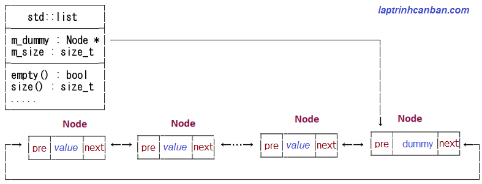

Cùng tìm hiểu về kiểu list trong C++. Bạn sẽ biết khái niệm list trong c++ là gì, cách khai báo list trong C++, cách khởi tạo list trong C++, cách truy cập phần tử của list, cũng như sự khác biệt giữa vector và list trong C++ sau bài học này.
List trong c++ là gì
List trong C++ là một danh sách liên kết đôi được sử dụng làm tiêu chuẩn để xử lý các đối tượng chứa nhiều phần tử trong C++.
Danh sách liên kết đôi ở đây có nghĩa là từng Node trong danh sách sẽ chứa thông tin vị trí của Node đứng trước và sau nó, nên việc xác định vị trí của một Node trong danh sách sẽ trở nên dễ dàng hơn với độ phức tạp của thuật toán sẽ là O(1) mà thôi.
Điều đó tạo ra ưu điểm của list trong C++ đó là, việc chèn và xóa một vị trí bất kỳ trong list có thể được thực hiện trong một thời gian cố định với tốc độ cao O(1).
Tuy nhiên thì ngược lại cũng tạo ra nhược điểm của list trong C++, đó là chúng ta không thể thực hiện việc truy cập vào vị trí ngẫu nhiên trong list. Do vậy để truy cập vào một vị trí bất kỳ trong list thì chương trình luôn phải truy cập tuần tự bằng một trình lặp, khiến tốc độ xử lý sẽ trở thành O(n).
Tương tự như vector trong C++ thì list cũng có khả năng tự thay đổi kích thước sau khi được tạo ra.
Tuy nhiên so với list thì vector trong C++ tuy chỉ có khả năng thêm xóa phần tử vào vị trí cuối cùng, nhưng lại có ưu thế trong việc truy cập vào vị trí ngẫu nhiên với tốc độ cao.
Nói tóm lại thì quan hệ giữa vector và list là đối lập nhau, và tùy vào nhu cầu mà chúng ta quyết định dùng list hay vector để xử lý các đối tượng chứa nhiều phần tử trong C++.
| Loại | Truy cập ngẫu nhiên | Thêm xóa ngẫu nhiên |
|---|---|---|
| vector | O(1) | O(N) |
| list | O(N) | O(1) |
Cấu trúc dữ liệu của list trong C++
Cấu trúc dữ liệu của list trong C++ như hình sau:

Khác với vector với các phần tử được lưu trong một mảng động thì phần tử trong list và forward_list lại được lưu trong các phân vùng bộ nhớ độc lập được gọi là Node. Và những node này được liên kết tuần tự với nhau thông qua con trỏ của chúng.
Với forward_list, mỗi node sẽ lưu trữ con trỏ chỉ tới node sau nó, trong khi với list, con trỏ của cả các node trước và sau node đó đều được lưu giữ.
Vì thế, list còn được gọi là danh sách liên kết đôi trong C++.
std::list trong C++
std::list trong C++ là một thư viện chuẩn được sử dụng làm tiêu chuẩn để xử lý danh sách liên kết đôi trong C++.
std::list được cài sẵn trong header file list và để sử dụng được chức năng này, chúng ta cần thêm dòng 「#include <list> 」 vào đầu chương trình.
|
Lại nữa, namespace của std::list là std, do đó bằng cách khai báo sử dụng namespace này vào đầu chương trình mà chúng ta có thể viết gọn std::list trong chương trình như sau:
|
Khai báo list trong C++
Khai báo 1 list trong C++
Để khai báo list trong C++, chúng ta viết dòng std::list, sau đó viết kiểu dữ liệu giữa cặp dấu <>, và cuối cùng là tên biến như sau:
std::list<type> lst;
Trong đó lst là tên biến list và type là kiểu dữ liệu. Chúng ta có thể dùng bất cứ kiểu dữ liệu nào có trong C++ để khai báo type, ví dụ như char, int, double, hay cấu trúc hoặc class tự tạo chẳng hạn.
Trong trường hợp đã khai báo namespace std vào đầu chương trình, chúng ta cũng có thể lược bỏ dòng std:: và dùng cú pháp khai báo list như sau:
using namespace std;
list<type> lst;
Thông thường chúng ta hay khai báo namespace std vào đầu chương trình để sử dụng tới các chức năng thông dụng khác như nhập xuất chẳng hạn, nên trong 2 phương pháp khai báo list ở trên thì phương pháp thứ 2 thường được sử dụng nhiều hơn.
Lưu ý list được khai báo với cú pháp này sẽ có 0 phần tử bên trong nó. Sau khi khai báo list kiểu này, chúng ta có thể sử dụng các hàm thành viên để có thể thêm phần tử vào nó sau này.
Ví dụ cụ thể:
|
Ngoài ra cách viết sử dụng cặp dấu <> như trên được viết theo cú pháp khi sử dụng chức năng template của C++ mà chúng ta sẽ cùng học trong các chuyên đề sau.
Khai báo list trong C++ bao gồm chỉ định số phần tử
Mặc dù kiểu list trong C++ là loại mảng động có khả năng tự thay đổi kích thước, tuy nhiên trong trường hợp không chỉ định rõ kích thước của nó, thì việc xử lý nó trong chương trình sẽ tiêu tốn thời gian nhiều hơn so với khi biết kích thước cụ thể của nó.
Bởi vậy nếu đã biết kích thước trước của một list, chúng ta nên chỉ định độ dài (số phần tử) khi khai báo nó, với cú pháp sau đây:
std::list<type> lst(length);
Trong đó length chính là độ dài(số phần tử() của list cần tạo.
Với cách khai báo list này thì các phần tử trong list sẽ được gán giá trị mặc định tùy thuộc vào kiểu dữ liệu sử dụng.
Ví dụ, nếu dùng kiểu số như int, double thì các phần tử sẽ có giá trị mặc định bằng 0 như sau:
/*Khai báo list lst kiểu số*/ |
Tuy nhiên nếu dùng kiểu chữ như char, string thì các phần tử sẽ có giá trị mặc định bằng Null được biểu diễn bởi trống khi in ra màn hình như sau:
/*Khai báo list lst kiểu chữ*/ |
Khai báo đồng thời nhiều list trong C++
Trong trường hợp cần khai báo đồng thời nhiều list trong C++, chúng ta viết các tên các biến cách nhau bởi dấu phẩy vào đằng sau std::list với cú pháp sau đây:
using namespace std;
list<type> name1, name2, name3, ... ;
Ví dụ cụ thể:
|
Khởi tạo list trong C++
Khởi tạo list trong C++ với các phần tử riêng biệt
Ngoài cách khai báo rồi gán giá trị cho list thì chúng ta cũng có thể khởi tạo list và gán luôn giá trị ban đầu cho biến list đó.
Chúng ta khởi tạo list trong C++ cách sử dụng cặp dấu ngoặc {} với cú pháp sau đây:
std::list<type> lst {value1, value2, value3, ...};
Trong đó
typelà kiểu dữ liệulstlà tên biến listvaluelà các giá trị của list
Ví dụ:
std::list<string> user{"Kiyoshi", "male", "Tokyo"}; |
Khởi tạo list trong C++ với các phần tử giống nhau
Chúng ta cũng có thể khởi tạo list với các phần tử có giá trị giống nhau, với cú pháp sau đây:
std::list<type> lst(length, value);
Trong đó length là số phần tử(độ dài), và value là giá trị sử dụng để khai báo đồng loạt các phần tử của list cần tạo.
Ví dụ:
//Khởi tạo list lst kiểu int gồm 5 phần tử có giá trị bằng 8 |
Khai báo list 2 chiều trong C++
Giống như mảng thì chúng ta cũng có thể sử dụng list đa chiều trong C++, và loại list đa chiều hay được sử dụng đó chính là list 2 chiều trong C++.
Để khai báo list 2 chiều trong C++ cũng như các loại list đa chiều khác, chúng ta sử dụng tới cú pháp sau đây:
using namespace std;
list<list<type> > lst {l1, l2, l3, ...};
Trong đó:
lstlà tên biến list 2 chiềullà các list 1 chiều được sử dụng như phần tử của list 2 chiều
Lưu ý, chúng ta cần phải viết thêm dấu cách giữa cặp dấu > > khi khai báo list 2 chiều. Lý do là để phân biệt với toán tử >> được sử dụng để dịch chuyển bit trong C++.
Ví dụ cụ thể:
|
Chúng ta cũng có thể khởi tạo các list 1 chiều trước rồi dùng chúng để khai báo list 2 chiều như sau:
|
Truy cập phần tử trong list C++
Khác với vector hay mảng, chúng ta không thể truy cập ngẫu nhiên vào phần tử bất kỳ trong một list. Do đó chúng ta cũng không thể sử dụng index của các phần tử để truy cập vào nó theo cách thông thường được.
Ví dụ nếu dùng index để truy cập vào vị trí ngẫu nhiên trong list thì lỗi sẽ trả về như sau:
list<string> user{"Kiyoshi", "male", "Tokyo"}; |
Thay vào đó, chúng ta cần phải tiến hành truy cập tuần tự vào các phần tử của list, thông qua vòng lặp hoặc là trình lặp mà Kiyoshi đã giới thiệu trong bài Duyệt list trong C++.
Ví dụ, chúng ta có thể truy cập vào phần tử của list 1 chiều thông qua vòng lặp dựa trên phạm vi như sau:
|
Kết quả:
Kiyoshi |
Tượng tự khi chúng ta cần truy cập vào phần tử trong list 2 chiều trong C++:
|
Và kết quả:
Honda |
Vector vs list trong C++
Như đã phân tích ở trên thì sự khác biệt lớn nhất giữa vector và list trong C++ đó chính là ở tốc độ xử lý khi truy cập ngẫu nhiên và thêm xóa ngẫu nhiên các vị trí trong đối tượng.
List là danh sách liên kết đôi (double linked list) với từng Node trong nó chứa các thông tin vị trí của các Node đứng trước và sau nó, nên nó có thể thêm xóa ngẫu nhiên phần tử với tốc độ cao, nhưng lại không có khả năng truy cập ngẫu nhiên phần tử.
Ngược lại vector là mảng động (dynamic array) với khả năng truy cập ngẫu nhiên phần tử với tốc độ cao, nhưng lại chỉ có thể thêm xóa phần tử ở cuối vector mà thôi.
Tuy vậy, với các đối tượng có ít phần tử (từ 10 phần tử trở xuống) thì việc thêm xóa phần tử bằng vector cũng OK nên thông thường chúng ta sử dụng vector là đủ rồi.
Chỉ đối với các đối tượng có nhiều hơn dữ liệu khiến ảnh hưởng tới tốc độ xử lý, thì chúng ta mới cần cân nhắc lựa chọn việc sử dụng giữa vector và list mà thôi.
Tổng kết
Trên đây Kiyoshi đã hướng dẫn bạn về list trong C++ rồi. Để nắm rõ nội dung bài học hơn, bạn hãy thực hành viết lại các ví dụ của ngày hôm nay nhé.
Và hãy cùng tìm hiểu những kiến thức sâu hơn về C++ trong các bài học tiếp theo.
URL Link
https://laptrinhcanban.com/cpp/lap-trinh-cpp-co-ban/list-trong-cpp/list-trong-cpp-la-gi/
HOME › lập trình c++ cơ bản dành cho người mới học lập trình>>20. list trong c++